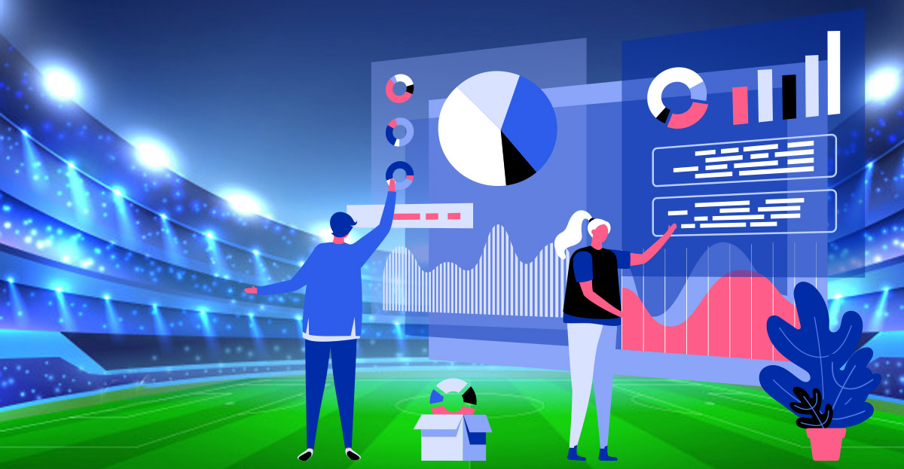
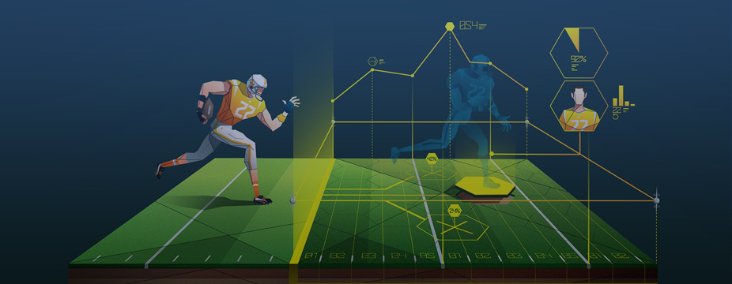
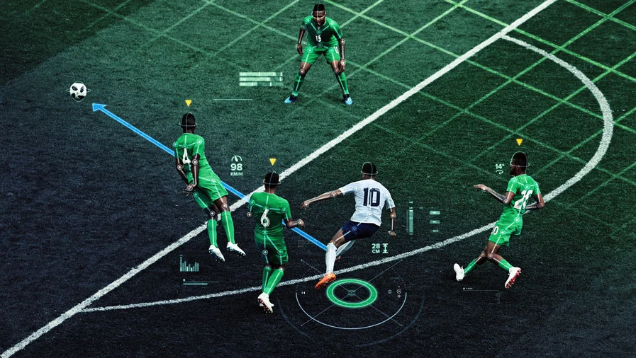
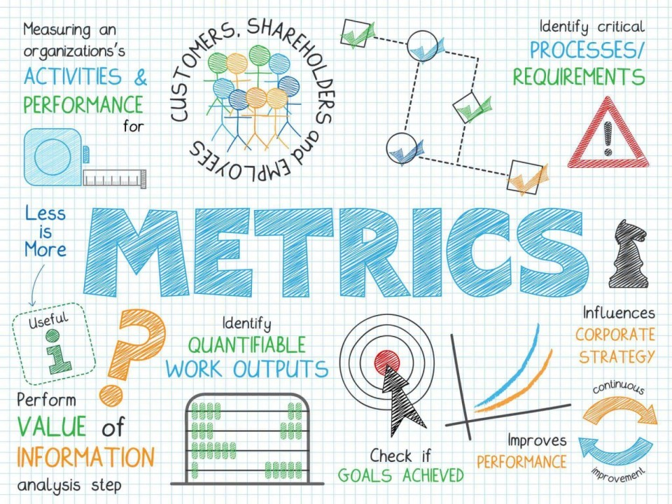
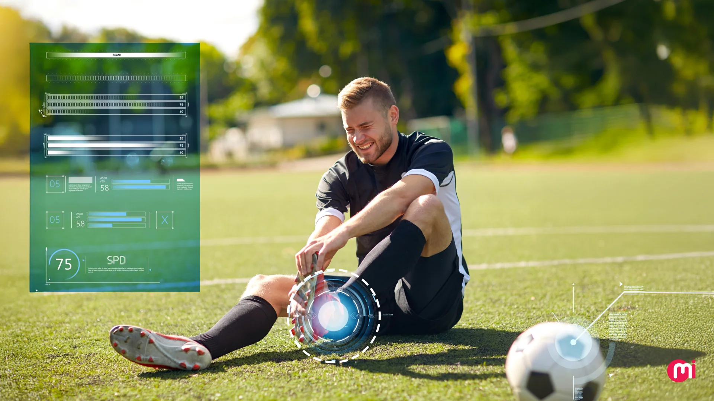

Introduction to Sports Analytics.
Sports analytics combines data science with athletic performance, providing a strategic blueprint for making decisions in game plans, skill improvement and player management. This approach includes the application of statistical models, data mining and predictive analytics to transform sports into a data-driven domain. In today’s global sports ecosystem, sports analytics provides insights into performance, strategy and well being as teams, coaches and athletes base their strategies and training regiments on comprehensive data analysis which outperforms traditional intuition, enabling teams and athletes to perform at a higher level. The importance of the application of data analysis in sports today cannot be over emphasized, especially in an era where athletic prowess is at an all time high and competition is global, the slightest edge can be the difference between an emphatic victory or a heartbreaking loss.
As competition grows increasingly fierce across every single sport, the room for error reduces significantly. This intense environment makes the nuanced advantages discovered through data analytics in sports not just desirable but essential for maintaining a competitive edge. Sports analytics provides a level of insight into performance, strategy and player well-being that was previously mythical. By collecting and interpreting large amounts of datasets from training, games daily activity and daily activities, analytics show what drives as well as impedes success. This shift marks a new era where data informed decisions can lead to remarkable achievements, from individual matches to championship wins. For instance, real-time data in soccer helps managers change formations and adjust tactics mid-game while basketball players now have the ability to refine shooting techniques as well as shot selection based on shot-tracking metrics. As technology improves, sports analytics redefines excellence, making sure teams stay competitive in a relentless environment, creating an avenue for long term success and innovation in athletic performance.

What is Sports Analytics?
Sports analytics is the science and art of applying data analysis, statistical modeling and computational algorithms to the sports industry, aiming to improve player performance, team strategy and operational efficiency. It processes different datasets like; player statistics, biomechanical data and tactical movements, as well as external factors like weather, into actionable insights. This evolution moves from descriptive statistics to predictive and prescriptive analytics that forecast outcomes and recommend actions. The history of sports analytics can be traced to the late 20th century, to pioneers like Bill James baseball’s sabermetrics, which gained momentum in the early 2000’s due to advanced computing, sensors and video tracking. This idea of infusing technology into sports was initially resisted by traditionalists favoring intuition, however when its adoption led to success stories like the Oakland A’s 2002 season; popularized by the movie Moneyball, the idea of using analytics in sports became ubiquitous from recreational youth leagues to professional sports arenas.
Sports analytics transcends mere statistics, simple box scores and basic averages. It provides a granular, multi-dimensional view of performance that covers a wide range of factors, extending far beyond the easy measured statistics. These factors include details of physical fitness, such as biomechanical efficiency and physiological responses to workload; tactical acuity, decision-making patterns, spatial awareness; and even psychological readiness, exploring factors like composure under pressure and response to tough situations. The essence of what sports analytics entails is the sophisticated transformation of raw, often disparate data points into actionable insights designed to increase the performance level of individual athletes and entire teams. Sports analytics serves as a bridge between the raw potential of data and the tangible improvement of sports performance. By properly analyzing the data and uncovering information, sports analytics provides a clearer objective picture of where improvements can be made at the both the individual and team levels, how tactics and strategies can be adjusted in response to performance data and opponent analysis, and what specific measures should be taken to ensure athletes are training and performing at their highest level while reducing the likelihood of injuries.

Application of Sports Analytics
Sports analytics is not just limited to a single sport; its ideas and applications are versatile and can be tailored to the unique demands and dynamics of virtually any athletic discipline. Sports analytics has changed decision making across different sports by transforming raw data into strategic insights. For instance in soccer, tracking metrics like expected goals (xG), player movement and pressing efficiency, informs managers about the efficacy of their strategies. NBA teams use shot charts, player efficiency ratings and real-time stats to optimize ATO (After Time Out) plays and rotations. Baseball thrives on sabermetrics; pioneered by Bill James, for pitch selection, defensive positioning and batting strategy. In the NFL, data drives play-calling, injury prevention and even roster selection.
Soccer: Soccer has undergone a major transformation through the evolution of data analytics. Analytics in soccer started with measuring basic statistics like goals and assists now includes GPS tracking, video analysis and wearable tech capturing everything from pass accuracy and shot selection to biometric data like distance covered and heart rate. Success stories like FC Barcelona that employed real-time performance data to gain insights into players strengths and weaknesses as well as prevent injuries, Brentford FC that used analytics extensively in their recruitment process since getting promoted to the Premier League and Leicester City, that leaned heavily into data analytics to inform their coaching strategy that resulted to their surprising title win in the 2015/2016 season, highlight the power of the application of analytics in decision making. National teams like the US Women’s Soccer Team also lean heavily into the use of analytics by hosting hackathons to innovate further by integrating analytics into scouting, player development and selection. As more soccer teams embrace the use of analytics, player performance, team strategy and player development would improve immensely, changing how the game is played, coached and enjoyed across all levels of competition.

Basketball: In recent years, basketball has undergone a profound change through the power of data analytics. Long ago, there was an over reliance on traditional counting statistics like points, rebounds and assists, now teams leverage advanced metrics, tracking systems and artificial intelligence to optimize every aspect of the game. Analytics now goes beyond positions and box scores, it also includes player tendencies, shot selection and team chemistry. Terms like “scoring rebounder” and “paint protector” have replaced previously held positional labels. At the college level, innovators like Kevin Pauga(creator of the KPI ranking system) have developed algorithms to measure team performance and predict NCAA placements. The NBA has completely embraced analytics with technologies like SportVU(a camera system that takes pictures 25 times a second with the goal following the ball and players nonstop) and Second Spectrum; a technology that provides advanced analytics and enhances viewing experiences for sports teams and fans. NBA Franchises like the Golden State Warriors and the Toronto Raptors have used data in shaping strategy and player development , while executives like Daryl Morey (Philadelphia 76ers General Manager) have leaned heavily into analytics-based team building. Beyond performance, data plays a huge role in injury prevention, teams data scientists use predictive models to manage workload and reduce risk during the regular season, ensuring peak performance in the postseason. From rec leagues to professional arenas, analytics is no longer a supplement, it has become integral to how basketball is played, coached and consumed. As technology advances, so will our understanding of the game, ushering in a new era of intelligent basketball.

Performance Metrics and Key Indicators
Within the ever expanding and sophisticated world of sports analytics, the identification,application and interpretation of performance metrics as well as key indicators are vital in unlocking the full potential of both athletes striving for excellence and entire teams working towards collective goals. These metrics, customized by sport and position, quantify player efficiency, team dynamics and fits within a strategic plan. This aspect of sports science serves as a bridge that transforms raw data into an asset of immense value. This asset provides a much deeper, objective and grounded understanding of performance dynamics across various sports , different positions in a team and multiple environmental conditions.
Common Metrics:In team sports like soccer and basketball, foundational metrics include total distance covered, sprint count, accelerations, decelerations and workload intensity(e.g heart rate, impacts) are derived from sensors that help assess stamina, explosiveness and overall physical output. Analyzing these metrics over time and in relation to game events helps assess current fatigue levels, predict potential declines in performance, and inform recovery needs.
Position Specific Metrics: Position specific metrics dig deeper. For instance, a midfielder might be evaluated on pass completion, tackles and interceptions, while a striker’s effectiveness is measured in shot accuracy, touches in the penalty area and expected goals (xG). In basketball, point guards are assessed on assist-to-turnover ratios, while centers might focus on rebound rates and shot-blocking. These highly tailored metrics allow for a more precise, objective, and contextually relevant evaluation of a player's performance within their specific role and how effectively and efficiently they contribute to the team's overall tactical framework and strategic objectives.
These highly tailored metrics provide a more precise, objective and relevant evaluation of a player’s performance within a specific role as well as how they efficiently and effectively contributed to the team’s overall tactical framework and objectives. The accurate identification, consistent tracking, and insightful analysis of these metrics are absolutely paramount for translating the vast amounts of raw data generated in modern sports into actionable insights that can directly inform coaching, training, and strategic decisions, ultimately leading to improved performance and competitive success.

Injury Prevention in Sports Analytics
Injury prevention is an important and ever-present concern in the elite level of sports. In this environment, the thin line between pushing an athlete to their physical limits for peak performance and overexertion that can regrettably cause injuries needs to be carefully walked. While it is important to note that no amount of data, technology or analytical insight can truly remove the inherent risk of injury in sports because of its unpredictable nature, sports analytics plays a role in reducing the likelihood and impact of those risks.The application of sports analytics in the injury prevention domain lies in its ability to identify hidden or overt patterns, understand the physiological and biomechanical stressors placed on athletes and pinpoint specific risk factors that are inherent in athletes’ training regimen. By continuously and properly analyzing workload data, movement mechanics and physiological responses, teams are able to work towards a significant reduction in the occurrence of non-contact and overuse injuries.
This strategic and preventative use of data to protect athlete performance is intrinsically linked to injury prevention, encompasses the holistic and continuous management of the athlete’s workload and the scientific enhancement of athlete’s recovery process. Through meticulous analysis of performance data during training, data captured by wearable technology and tracking systems enable the early detection of subtle physiological or performance signs that could indicate overuse injuries, fatigue or burnout before these issues become symptomatic and negatively impact performance or lead to injury. Early detection capability allows for timely intervention by team staff that strategically adjusting training schedules to increase rest, lower intensity and implement specific recovery methods, establishing a critical equilibrium that ensures athletes maintain their current level, improve their physical condition and skills and overall performance levels consistently throughout a demanding season or over the course of their career.

Conclusion
Sports analytics has undeniably changed sports across playing levels, from youths league to professional circuits, it has not just influenced sports, it has revolutionized how sports are played, athletes are trained and managed, how teams operate and even how fans engage with their favorite sports and teams. Sports analytics has successfully taken a massive and continuously growing amount of data, from various sources across different sports and competition levels, and transformed it into useful, meaningful and actionable advice that directly helps athletes and teams perform, improve, take smarter approaches and operate more efficiently.
Looking back at the numerous success stories from different sports, it is abundantly clear that strategically using data works and provides a significant and decisive advantage in the pursuit of excellence. This state is truly just the beginning of the journey. As technology continues to advance at an accelerating pace, becoming more sophisticated and integrated as well as increasingly affordable, so too will be the depth, accuracy and speed of the insights that can be derived from sports analytics. We can confidently expect to see the development and implementation of smarter, more nuanced and dynamic team strategies, the cultivation of fine and more highly tuned individual skills and the creation of healthier and more sustainable sports environments for participants of all ages and levels in the future.
Sports analytics isn't just about dealing with raw data, complex algorithms or sophisticated software. At its core, it is about translating data, algorithms and using technology to create real-world improvements and tangible outcomes. Sports analytics create an avenue to make athletic dreams a reality by providing the objective roadmap to reach potential by identifying hidden strengths and areas for growth and ultimately taking sports performance, strategy and experience to the next level. As we move into the future, the impact and influence of analytics will only grow, expand and deepen its integration into every facet of the sports world. Sports analytics will continue to solidify its position as an important pillar of modern sports, making it an incredibly exciting and dynamic time for athletes, coaches, fans and executives.